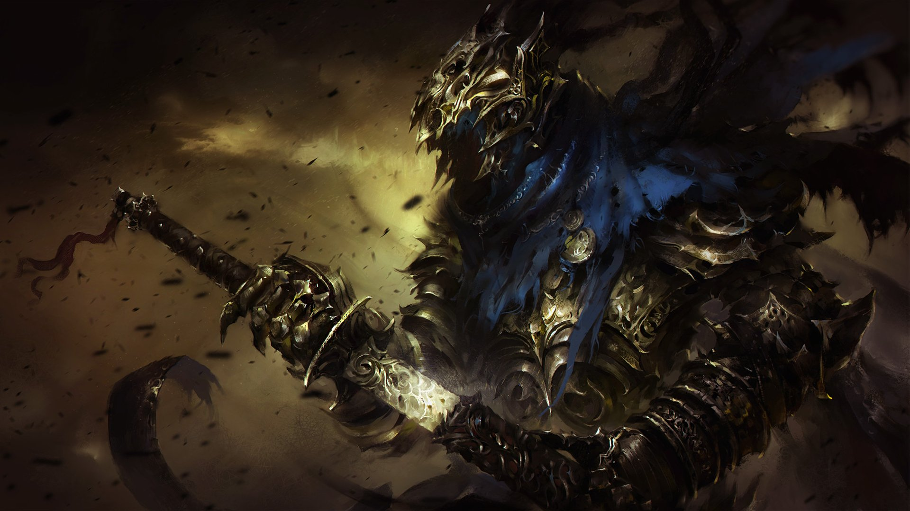
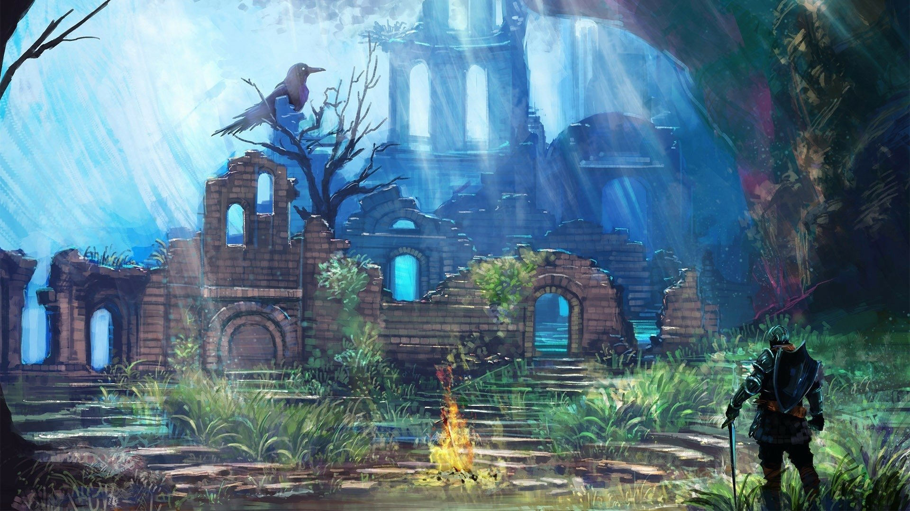
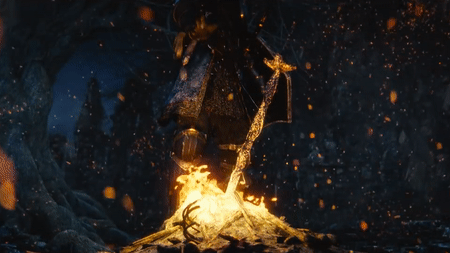

<app-navbar></app-navbar>
<div class="fondo">
        <div class="text-center py-5">
            <h1 class="ache1" style="color: white;">BIENVENIDO A DARK SOULS API</h1>
        </div>
    <div class="justify-content-center align-items-center text-center d-flex">
        <div id="carouselExampleIndicators" class="carousel slide" style="width: 70%;">
            <div class="carousel-indicators">
              <button type="button" data-bs-target="#carouselExampleIndicators" data-bs-slide-to="0" class="active" aria-current="true" aria-label="Slide 1"></button>
              <button type="button" data-bs-target="#carouselExampleIndicators" data-bs-slide-to="1" aria-label="Slide 2"></button>
              <button type="button" data-bs-target="#carouselExampleIndicators" data-bs-slide-to="2" aria-label="Slide 3"></button>
            </div>
            <div class="carousel-inner w-80">
              <div class="carousel-item active">
                
              </div>
              <div class="carousel-item">
                
              </div>
              <div class="carousel-item">
                
              </div>
            </div>
            <button class="carousel-control-prev" type="button" data-bs-target="#carouselExampleIndicators" data-bs-slide="prev">
              <span class="carousel-control-prev-icon" aria-hidden="true"></span>
              <span class="visually-hidden">Previous</span>
            </button>
            <button class="carousel-control-next" type="button" data-bs-target="#carouselExampleIndicators" data-bs-slide="next">
              <span class="carousel-control-next-icon" aria-hidden="true"></span>
              <span class="visually-hidden">Next</span>
            </button>
          </div>
    </div>
    <div class="d-flex align-items-center justify-content-center" style="margin-top: 2%; padding-bottom: 2%;">
        <div class="card py-5 col-lg-5" style="padding: 10%; margin-right: 2%;">
            <h3> Dark Souls es una serie de juegos de rol de acción que creó la famosa categoría de videojuegos 'soulslike'. </h3>
        </div>
        <div class="card py-5 col-lg-5" style="padding: 10%; margin-left: 2%;">
            <h3> Más de cientas personas han intentado pasarse este reto, y gran parte de ellos lo dejaron a medias. </h3>
        </div>
    </div>
</div>
